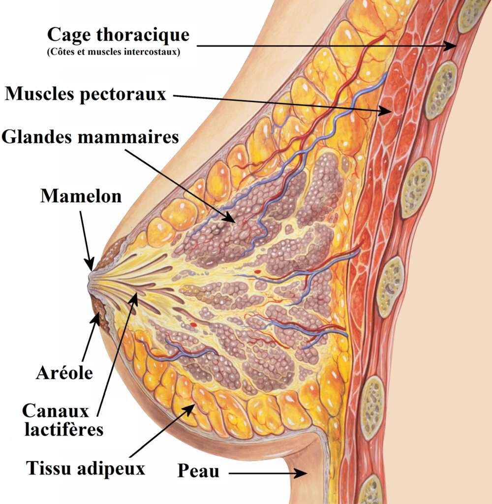
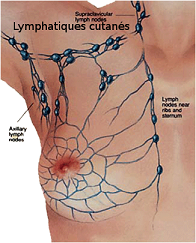

La mammectomie
Definition
La mammectomie est l'ablation de la glande mammaire, lorsque celle-ci est atteinte d'une tumeur maligne : le cancer du sein.

Soins infirmiers en pre-operatoire
Etablir une relation de confiance, etre a l'ecoute.
Evaluer ce que la patiente sait de son diagnostic.
- Preparation dossier :
- Bilan sanguin : NFS, coagulation, groupe sanguin et double determination de RAI datant de moins de 3 jours, marqueurs tumoraux (ACE, CA 15-3).
- Radiographie pulmonaire, electocardiogramme.
- Bilan d'extension : scintigraphie osseuse, echographie hepatique.
- Preparation physique :
- A jeun des minuit.
- Champ operatoire : cou, aisselle, bras, ombilic.
- Douche antiseptique.
- Pas de vernis, ni de bijoux, ni de prothese.
- Faire uriner avant la premedication et avant d'aller au bloc.
- Tenue de bloc, bracelet d'identification.
- Prise des constantes.
- Premedication : ne plus se lever apres.
Soins infirmiers en post-operatoire
Soins a J0
Surveillance des parametres : tension arterielle, pouls, frequence respiratoire, conscience.
Surveillance du pansement : absence de saignement, effet compressif.
Surveillance des redons : en declive, aspect, quantite, aspiration.
Surveillance de la voie d'abord veineuse place a l'oppose du bras opere.
Surveillance de la douleur.
Installation en decubitus dorsal, surelever le bras opere afin que la circulation se remette en place : pour eviter un lymphœdeme provoquer par l'engorgement des tissus par la lymphe : irreversible. Surveillance œdeme.
Alimentation legere le soir.
Soins les jours suivants
Lever precoce a J1.
Aide a la toilette.
Refection du pansement a J2 en presence du chirurgien, car la patiente peut ne pas etre pretre a regarder : lui decrire la cicatrice, l'aspect, l'evolution.
Ablation du redon antero-parietal entre J3 et J5. Ablation du redon axillaire entre J5 et J7.
Ablation des fils a J10.
Kinesitherapie : mobilisation du bras : mouvement de rotation, eviter la contracture capsulaire.
Relation d'aide
La relation d'aide est essentielle pour la patiente ayant subie une mammectomie.
Aide au travail de deuil : sein est symbole de feminite, de reconfort, de maternite, de sexualite.
Apporter une reponse adaptee aux besoins de la personne.
Education et conseils a la patiente
Pour eviter toute atteinte du bras, avant-bras et main :
Port de manches longues si risque de griffure.
Port de soutien-gorge en coton.
Port de gants pour jardiner, vaisselle, cuison.
Ne pas arracher les peaux autour des ongles mais les couper.
Ne pas utiliser de rasoir mecanique pour l'aisselle.
Eviter les coups de soleil.
Pour eviter toute compression :
Port de manches souples.
Montre, bracelets larges.
Ne pas dormir sur le bras du cete opere pour ne pas bloquer la circulation.
Ne pas porter de charge lourde avec le bras du cete operer.
Eviter du cete opere : injection, prise de sang, prise de constantes.
Masser la cicatrice pour redonner de la souplesse.
Diagnostics infirmiers
Anxiete liee a l'intervention.
Anxiete liee a un manque de connaissance.
Perturbation du concept de soi liee aux consequences de la pathologie.
Perturbation de l'image corporelle liee au traitement.
Perturbation de l'estime de soi.
Perturbation de la sexualite liee a la nouvelle image du corps.
Voir aussi :
Le cancer du sein
Module Gynecologie Maternite
Module Cancerologie